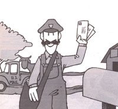

You can hold a "steady" job, and maintain a homestead!
Working for the U.S. Postal Service-with its tightly structured rules, regulations, and schedules-might seem to be the most unlikely way possible to escape "the system". But wait . . . part-time postal work could turn out to be exactly the sort of I'm-still-my-own-boss employment that you've been looking for! It requires no investment or expensive training, nor any special skills (other than common sense and a little physical dexterity) .. . and you might even be able to choose the number of days you'll work per week!
Naturally, such lenient qualifications aren't applicable to all positions in the Postal Service, but they do apply to my job: I'm a substitute rural carrier. In other words, I deliver the mail when the regular postman or -woman is sick, goes on vacation, or has a day off . . . events which occur-on my route-about 50 times a year, or almost one day a week. My schedule, then, provides some cash income plus the time I need to get our farm going!
A FULL SCHEDULE
On the days that I work for Uncle Sam, I'm as busy as the devil at a revival meeting! First, I get up at 4 a.m. to do the daily chores that are too heavy for my wife and children to handle . . . then I drive 27 miles into town, arriving at the post office about 6 a.m. Right away, I pick up my mail from the bins where most of it has already been sorted, according to routes, by the clerks. (They've been on the job since 2 a.m.!) My first task is to "case" the letters by plac ing them-in the order that the mailboxes come up on my circuit-in pigeon-holes in a seven-foot-tall cabinet.
Getting the mail in order takes me anywhere from two to three hours. When the chief clerk calls out "all up", I collect the last batch for my route . . . case it . . . and then-somewhere between 9:00 and 9:45-pull all the mail from the cabinet and tie it into bundles so it will stay in order while I'm out on the road.
Depending upon the size of the day's load, my deliveries will require up to three hours to complete ... so I'm almost always back at the post office shortly after 12:30. There, I case up all the mail that arrived while I was out on the route . . . and that's it for the day! No hassles, no wasted time: I come in, do the work, and leave as soon as it's finished.
And the pay isn't bad, either! Actually, the salary differs slightly for each route, based on the mileage and the number of mailboxes involved. For an average 40- to 50-mile rural route, a regular carrier will earn about $18,000 a year (plus overtime when the workload requires more than 40 hours a week), and part-time pay is proportionate to that amount. When I include the mileage allowance for the use of my car while delivering the mail, I figure I make the tidy sum of between $60 and $70 per day.
OTHER BENEFITS
In addition to the extra cash and the flexible schedule possible with part-time work, there are other-more intangible-benefits in employment with the Postal Service. Delivering the mail on a rural route is a great way to meet some mighty interesting folks (not to mention the fact that it provides an opportunity to enjoy the beautiful countryside you'll likely pass through while making your rounds).
By virtue of the job, the letter carrier seems to be everyone's friend, too. Children regularly meet me to pick up their family's mail . . . and older folks stop me to chat about their newest grandchild. Furthermore, whenever a gardening or a construction problem crops upon my own homestead, I've got 400 "neighbors" to consult with. For instance, if I want to know what to do about tomato blight, I simply stop at the house, along my route, that has five acres of healthy tomatoes out back!
There are also a few surprise "bonuses" that come with the job: Just the other day one old man gave me a valuable 40-minute lesson in predicting the weather from natural phenomena . . . while a retired gentleman who likes to bake routinely leaves huge, fragrant loaves of bread in the box for me.
SIGNING ON
Unfortunately, getting a position as a part-time rural mail carrier isn't as easy as is carrying out the duties once you've got the job. Since the Postal Service is part of the federal bureaucracy, its hiring process involves a good bit of red tape.
First of all, every post office in the country maintains its own register of qualified applicants ... and all vacancies in the carrier lineup are filled from that list. To have your name placed on a register, you must take a special Civil Service written exam ... which is administered only when the old list is exhausted (and that could mean a long wait, depending on the turnover of personnel in your area).
To further complicate matters, an aspiring mail carrier is required to take the test at each post office where he or she would like employment. (In addition, if you aren't hired within a year, you'll have to complete the same exam again!) Once a station's register is made up, consideration for any available jobs is given in order of highest test scores . . . and the top three candidates compete for each opening. Then-when the existing roster is almost exhausted-another testing session will be held and a new ranking list drawn up from the test scores.
The system is generally without bias, although veterans do have an edge over other candidates, since five points are automatically added to their test scores. (Disabled veterans receive an extra ten points.)
Of course, it's possible-but unlikelythat you could be in the running many times and never hired. Actually, it's much more probable that you'll be considered several times before you're hired . . . and there's even a chance that you'll land a job the first time you're interviewed!
So, if you want to break out of the fulltime employment rut and bypass the system, why not do it by taking a job with one of the oldest branches of the federal establishment? Sure, it may sound paradoxical, but substitute postal work offers extra cash, on-the-job freedom, and enough spare time to pursue your own choice of lifestyle. All you have to do is go back to the land . . . by mail!
|
 |
|
|